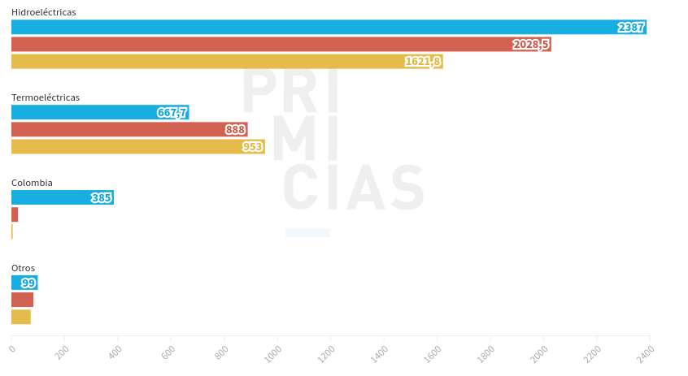

Ecuador está atravesando una grave crisis eléctrica, algo que no se había visto en los últimos 14 años, con cortes de luz que se alargan durante horas. El 23 de septiembre de 2024, el gobierno de Daniel Noboa informó que el país volvería a enfrentar apagones masivos y programados, de hasta 10 horas, como ocurrió en octubre de 2022 y abril de 2024. Aunque a principios de octubre se había prometido que los cortes no durarían más de cuatro horas, la situación se deterioró rápidamente y, a partir del 9 de octubre, volvieron los apagones prolongados.
El principal problema radica en que el embalse de Mazar, que es crucial para el suministro eléctrico del país, ha alcanzado niveles críticos. Este embalse abastece a algunas de las hidroeléctricas más importantes, que juntas generan alrededor del 38% de la electricidad del país. Sin embargo, en época de sequía, como la que atraviesa Ecuador, la producción de energía hidroeléctrica disminuye drásticamente, dejándonos vulnerables a los apagones.
Aunque Ecuador ha invertido en 14 hidroeléctricas entre 2007 y 2017, la falta de balance entre la energía hidroeléctrica y la termoeléctrica es un problema. La capacidad de generación de energía termoeléctrica no creció al mismo ritmo que la hidroeléctrica, y gran parte de las plantas termoeléctricas existentes son viejas, lo que limita su funcionamiento. Además, muchas de las hidroeléctricas, como Coca Codo Sinclair, no operan a su máxima capacidad debido a fallas estructurales o problemas en su mantenimiento.
La falta de inversión en nuevas plantas de generación, especialmente en el gobierno de Lenín Moreno, ha empeorado la situación. Aunque se planearon nuevas plantas para enfrentar la creciente demanda de electricidad, solo unas pocas han entrado en funcionamiento. Esto se ha sumado a un aumento constante en el consumo de electricidad en el país, lo que agrava aún más la crisis.
Fuente: Primicias
Las cifras de generación que hoy tiene Ecuador contrastan con el escenario previo a que comiencen los racionamientos de luz. Por ejemplo, entre el 1 y el 10 de septiembre, el país contó con 3.538 megavatios hora de generación.
Fuente: Primicias